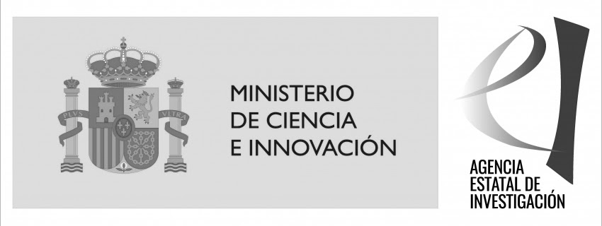
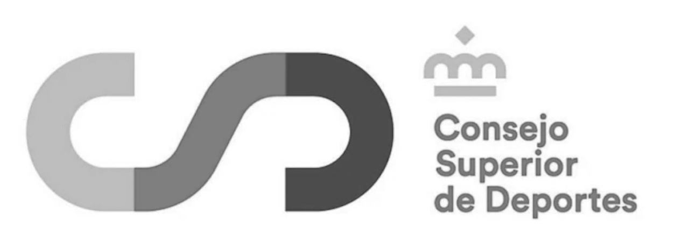

From motion to trusted measurement
We turn everyday wearable sensors into reliable, decision-grade signals: human movement measured continuously beyond the laboratory, with an uncertainty that is known and can be verified.
- Knee angle estimated from two wearable sensors
- 95 % coverage interval
- Reference measurement
- Operating situation detected
A research group on wearable measurement of human movement
The Multisensor Systems and Robotics group (SiMuR) works on the design and characterisation of wearable multisensor systems for the analysis of human movement, with the aim of turning movement into a signal that can be measured continuously and reliably, beyond the laboratory.
Our work follows a single programme: reliable measurement of human movement with wearable sensors, from the sensor node to the joint angle and its uncertainty. Activity recognition supports it, by identifying what the person is doing when a measurement is taken.
Our main application domain is active and healthy ageing, where we use objective measures of physical activity, gait and mobility to assess autonomy in daily life. Our methods also address rehabilitation, sport and occupational health.
Three conditions we want to meet at once
Human movement can be measured reliably today inside a space watched by cameras, or with sensors placed and calibrated by a specialist. Our programme asks what it takes to drop those restrictions and still call the result a measurement.
Everyday conditions
An uncontrolled setting, movement that nobody prescribes and no expert present while the data are recorded.
Non-expert users
Sensors placed and operated by the wearer, a coach or healthcare staff, following only the system's instructions.
Known, verifiable uncertainty
Every value comes with an interval, and that interval is checked against a reference instead of being assumed.
One research programme
We develop portable, affordable and minimally intrusive instrumentation to estimate movement variables from wearable sensors: segment orientation, joint angles, gait events, contact times, speed and distance. The work combines sensor design and calibration, signal processing, biomechanical modelling and learning-based estimation, with experimental validation against the optical reference of the MovLab laboratory.
- Sensor nodes and their metrology
- Joint kinematics
- Gait and spatio-temporal variables
- Uncertainty and operating domain
A supporting line on activity recognition provides the context in which those measurements are interpreted.
Representative projects
Funded research and contracts with clinical, sport and industrial partners.
Optimisation of sprint running analysis with inertial sensors. Sponsor: Real Federación Española de Atletismo.
Wearable technology in primary care for personalised exercise medicine. Funding: Instituto de Salud Carlos III.
Effects of lifestyle on delaying ageing. EDASTUR consortium. Funding: Principality of Asturias.
Assessment of sports practice with inertial sensors: processing methods. Sponsor: Human Analytics.
Joint angle measurement in the workplace. Three successive contracts: a system to measure upper-limb postures and movements, used by prevention technicians at real workplaces (2010), and prototype extensions to the neck and trunk (2012) and to the lower limb (2014). Sponsor: FREMAP, mutual insurance company of the Social Security. Published in IEEE I2MTC 2012 and CMBBE 2016.
Sponsors and partners

